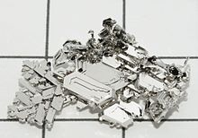

Platinum
|  | |||||||||||||||||||||||||||||||||||||||||||||||||||||||||||||||||||||||||||||||||||||||||||||||||||||||||||||||||||||||||||||||||||||||||||||||||||||||||||||||||||||||||||||||||||||||||||||||||||||||||||||||||||||||||||||||||||||
| General properties | |||||||||||||||||||||||||||||||||||||||||||||||||||||||||||||||||||||||||||||||||||||||||||||||||||||||||||||||||||||||||||||||||||||||||||||||||||||||||||||||||||||||||||||||||||||||||||||||||||||||||||||||||||||||||||||||||||||
|---|---|---|---|---|---|---|---|---|---|---|---|---|---|---|---|---|---|---|---|---|---|---|---|---|---|---|---|---|---|---|---|---|---|---|---|---|---|---|---|---|---|---|---|---|---|---|---|---|---|---|---|---|---|---|---|---|---|---|---|---|---|---|---|---|---|---|---|---|---|---|---|---|---|---|---|---|---|---|---|---|---|---|---|---|---|---|---|---|---|---|---|---|---|---|---|---|---|---|---|---|---|---|---|---|---|---|---|---|---|---|---|---|---|---|---|---|---|---|---|---|---|---|---|---|---|---|---|---|---|---|---|---|---|---|---|---|---|---|---|---|---|---|---|---|---|---|---|---|---|---|---|---|---|---|---|---|---|---|---|---|---|---|---|---|---|---|---|---|---|---|---|---|---|---|---|---|---|---|---|---|---|---|---|---|---|---|---|---|---|---|---|---|---|---|---|---|---|---|---|---|---|---|---|---|---|---|---|---|---|---|---|---|---|---|---|---|---|---|---|---|---|---|---|---|---|---|---|---|---|
| Name, symbol | platinum, Pt | ||||||||||||||||||||||||||||||||||||||||||||||||||||||||||||||||||||||||||||||||||||||||||||||||||||||||||||||||||||||||||||||||||||||||||||||||||||||||||||||||||||||||||||||||||||||||||||||||||||||||||||||||||||||||||||||||||||
| Pronunciation | /ˈplætɨnəm/ | ||||||||||||||||||||||||||||||||||||||||||||||||||||||||||||||||||||||||||||||||||||||||||||||||||||||||||||||||||||||||||||||||||||||||||||||||||||||||||||||||||||||||||||||||||||||||||||||||||||||||||||||||||||||||||||||||||||
| Appearance | silvery white | ||||||||||||||||||||||||||||||||||||||||||||||||||||||||||||||||||||||||||||||||||||||||||||||||||||||||||||||||||||||||||||||||||||||||||||||||||||||||||||||||||||||||||||||||||||||||||||||||||||||||||||||||||||||||||||||||||||
| Platinum in the periodic table | |||||||||||||||||||||||||||||||||||||||||||||||||||||||||||||||||||||||||||||||||||||||||||||||||||||||||||||||||||||||||||||||||||||||||||||||||||||||||||||||||||||||||||||||||||||||||||||||||||||||||||||||||||||||||||||||||||||
|
|||||||||||||||||||||||||||||||||||||||||||||||||||||||||||||||||||||||||||||||||||||||||||||||||||||||||||||||||||||||||||||||||||||||||||||||||||||||||||||||||||||||||||||||||||||||||||||||||||||||||||||||||||||||||||||||||||||
| Atomic number | 78 | ||||||||||||||||||||||||||||||||||||||||||||||||||||||||||||||||||||||||||||||||||||||||||||||||||||||||||||||||||||||||||||||||||||||||||||||||||||||||||||||||||||||||||||||||||||||||||||||||||||||||||||||||||||||||||||||||||||
| Standard atomic weight (±) | 195.084(9)[1] | ||||||||||||||||||||||||||||||||||||||||||||||||||||||||||||||||||||||||||||||||||||||||||||||||||||||||||||||||||||||||||||||||||||||||||||||||||||||||||||||||||||||||||||||||||||||||||||||||||||||||||||||||||||||||||||||||||||
| Element category | transition metal | ||||||||||||||||||||||||||||||||||||||||||||||||||||||||||||||||||||||||||||||||||||||||||||||||||||||||||||||||||||||||||||||||||||||||||||||||||||||||||||||||||||||||||||||||||||||||||||||||||||||||||||||||||||||||||||||||||||
| Group, block | group 10, d-block | ||||||||||||||||||||||||||||||||||||||||||||||||||||||||||||||||||||||||||||||||||||||||||||||||||||||||||||||||||||||||||||||||||||||||||||||||||||||||||||||||||||||||||||||||||||||||||||||||||||||||||||||||||||||||||||||||||||
| Period | period 6 | ||||||||||||||||||||||||||||||||||||||||||||||||||||||||||||||||||||||||||||||||||||||||||||||||||||||||||||||||||||||||||||||||||||||||||||||||||||||||||||||||||||||||||||||||||||||||||||||||||||||||||||||||||||||||||||||||||||
| Electron configuration | [Xe] 4f14 5d9 6s1 | ||||||||||||||||||||||||||||||||||||||||||||||||||||||||||||||||||||||||||||||||||||||||||||||||||||||||||||||||||||||||||||||||||||||||||||||||||||||||||||||||||||||||||||||||||||||||||||||||||||||||||||||||||||||||||||||||||||
| per shell | 2, 8, 18, 32, 17, 1 | ||||||||||||||||||||||||||||||||||||||||||||||||||||||||||||||||||||||||||||||||||||||||||||||||||||||||||||||||||||||||||||||||||||||||||||||||||||||||||||||||||||||||||||||||||||||||||||||||||||||||||||||||||||||||||||||||||||
| Physical properties | |||||||||||||||||||||||||||||||||||||||||||||||||||||||||||||||||||||||||||||||||||||||||||||||||||||||||||||||||||||||||||||||||||||||||||||||||||||||||||||||||||||||||||||||||||||||||||||||||||||||||||||||||||||||||||||||||||||
| Phase | solid | ||||||||||||||||||||||||||||||||||||||||||||||||||||||||||||||||||||||||||||||||||||||||||||||||||||||||||||||||||||||||||||||||||||||||||||||||||||||||||||||||||||||||||||||||||||||||||||||||||||||||||||||||||||||||||||||||||||
| Melting point | 2041.4 K (1768.3 °C, 3214.9 °F) | ||||||||||||||||||||||||||||||||||||||||||||||||||||||||||||||||||||||||||||||||||||||||||||||||||||||||||||||||||||||||||||||||||||||||||||||||||||||||||||||||||||||||||||||||||||||||||||||||||||||||||||||||||||||||||||||||||||
| Boiling point | 4098 K (3825 °C, 6917 °F) | ||||||||||||||||||||||||||||||||||||||||||||||||||||||||||||||||||||||||||||||||||||||||||||||||||||||||||||||||||||||||||||||||||||||||||||||||||||||||||||||||||||||||||||||||||||||||||||||||||||||||||||||||||||||||||||||||||||
| Density near r.t. | 21.45 g·cm−3 | ||||||||||||||||||||||||||||||||||||||||||||||||||||||||||||||||||||||||||||||||||||||||||||||||||||||||||||||||||||||||||||||||||||||||||||||||||||||||||||||||||||||||||||||||||||||||||||||||||||||||||||||||||||||||||||||||||||
| when liquid, at m.p. | 19.77 g·cm−3 | ||||||||||||||||||||||||||||||||||||||||||||||||||||||||||||||||||||||||||||||||||||||||||||||||||||||||||||||||||||||||||||||||||||||||||||||||||||||||||||||||||||||||||||||||||||||||||||||||||||||||||||||||||||||||||||||||||||
| Heat of fusion | 22.17 kJ·mol−1 | ||||||||||||||||||||||||||||||||||||||||||||||||||||||||||||||||||||||||||||||||||||||||||||||||||||||||||||||||||||||||||||||||||||||||||||||||||||||||||||||||||||||||||||||||||||||||||||||||||||||||||||||||||||||||||||||||||||
| Heat of vaporization | 510 kJ·mol−1 | ||||||||||||||||||||||||||||||||||||||||||||||||||||||||||||||||||||||||||||||||||||||||||||||||||||||||||||||||||||||||||||||||||||||||||||||||||||||||||||||||||||||||||||||||||||||||||||||||||||||||||||||||||||||||||||||||||||
| Molar heat capacity | 25.86 J·mol−1·K−1 | ||||||||||||||||||||||||||||||||||||||||||||||||||||||||||||||||||||||||||||||||||||||||||||||||||||||||||||||||||||||||||||||||||||||||||||||||||||||||||||||||||||||||||||||||||||||||||||||||||||||||||||||||||||||||||||||||||||
vapor pressure
|
|||||||||||||||||||||||||||||||||||||||||||||||||||||||||||||||||||||||||||||||||||||||||||||||||||||||||||||||||||||||||||||||||||||||||||||||||||||||||||||||||||||||||||||||||||||||||||||||||||||||||||||||||||||||||||||||||||||
| Atomic properties | |||||||||||||||||||||||||||||||||||||||||||||||||||||||||||||||||||||||||||||||||||||||||||||||||||||||||||||||||||||||||||||||||||||||||||||||||||||||||||||||||||||||||||||||||||||||||||||||||||||||||||||||||||||||||||||||||||||
| Oxidation states | 6, 5, 4, 3, 2, 1, −1, −2 (a mildly basic oxide) | ||||||||||||||||||||||||||||||||||||||||||||||||||||||||||||||||||||||||||||||||||||||||||||||||||||||||||||||||||||||||||||||||||||||||||||||||||||||||||||||||||||||||||||||||||||||||||||||||||||||||||||||||||||||||||||||||||||
| Electronegativity | Pauling scale: 2.28 | ||||||||||||||||||||||||||||||||||||||||||||||||||||||||||||||||||||||||||||||||||||||||||||||||||||||||||||||||||||||||||||||||||||||||||||||||||||||||||||||||||||||||||||||||||||||||||||||||||||||||||||||||||||||||||||||||||||
| Ionization energies | 1st: 870 kJ·mol−1 2nd: 1791 kJ·mol−1 |
||||||||||||||||||||||||||||||||||||||||||||||||||||||||||||||||||||||||||||||||||||||||||||||||||||||||||||||||||||||||||||||||||||||||||||||||||||||||||||||||||||||||||||||||||||||||||||||||||||||||||||||||||||||||||||||||||||
| Atomic radius | empirical: 139 pm | ||||||||||||||||||||||||||||||||||||||||||||||||||||||||||||||||||||||||||||||||||||||||||||||||||||||||||||||||||||||||||||||||||||||||||||||||||||||||||||||||||||||||||||||||||||||||||||||||||||||||||||||||||||||||||||||||||||
| Covalent radius | 136±5 pm | ||||||||||||||||||||||||||||||||||||||||||||||||||||||||||||||||||||||||||||||||||||||||||||||||||||||||||||||||||||||||||||||||||||||||||||||||||||||||||||||||||||||||||||||||||||||||||||||||||||||||||||||||||||||||||||||||||||
| Van der Waals radius | 175 pm | ||||||||||||||||||||||||||||||||||||||||||||||||||||||||||||||||||||||||||||||||||||||||||||||||||||||||||||||||||||||||||||||||||||||||||||||||||||||||||||||||||||||||||||||||||||||||||||||||||||||||||||||||||||||||||||||||||||
| Miscellanea | |||||||||||||||||||||||||||||||||||||||||||||||||||||||||||||||||||||||||||||||||||||||||||||||||||||||||||||||||||||||||||||||||||||||||||||||||||||||||||||||||||||||||||||||||||||||||||||||||||||||||||||||||||||||||||||||||||||
| Crystal structure | face-centered cubic (fcc)
 |
||||||||||||||||||||||||||||||||||||||||||||||||||||||||||||||||||||||||||||||||||||||||||||||||||||||||||||||||||||||||||||||||||||||||||||||||||||||||||||||||||||||||||||||||||||||||||||||||||||||||||||||||||||||||||||||||||||
| Speed of sound thin rod | 2800 m·s−1 (at r.t.) | ||||||||||||||||||||||||||||||||||||||||||||||||||||||||||||||||||||||||||||||||||||||||||||||||||||||||||||||||||||||||||||||||||||||||||||||||||||||||||||||||||||||||||||||||||||||||||||||||||||||||||||||||||||||||||||||||||||
| Thermal expansion | 8.8 µm·m−1·K−1 (at 25 °C) | ||||||||||||||||||||||||||||||||||||||||||||||||||||||||||||||||||||||||||||||||||||||||||||||||||||||||||||||||||||||||||||||||||||||||||||||||||||||||||||||||||||||||||||||||||||||||||||||||||||||||||||||||||||||||||||||||||||
| Thermal conductivity | 71.6 W·m−1·K−1 | ||||||||||||||||||||||||||||||||||||||||||||||||||||||||||||||||||||||||||||||||||||||||||||||||||||||||||||||||||||||||||||||||||||||||||||||||||||||||||||||||||||||||||||||||||||||||||||||||||||||||||||||||||||||||||||||||||||
| Electrical resistivity | 105 nΩ·m (at 20 °C) | ||||||||||||||||||||||||||||||||||||||||||||||||||||||||||||||||||||||||||||||||||||||||||||||||||||||||||||||||||||||||||||||||||||||||||||||||||||||||||||||||||||||||||||||||||||||||||||||||||||||||||||||||||||||||||||||||||||
| Magnetic ordering | paramagnetic | ||||||||||||||||||||||||||||||||||||||||||||||||||||||||||||||||||||||||||||||||||||||||||||||||||||||||||||||||||||||||||||||||||||||||||||||||||||||||||||||||||||||||||||||||||||||||||||||||||||||||||||||||||||||||||||||||||||
| Tensile strength | 125–240 MPa | ||||||||||||||||||||||||||||||||||||||||||||||||||||||||||||||||||||||||||||||||||||||||||||||||||||||||||||||||||||||||||||||||||||||||||||||||||||||||||||||||||||||||||||||||||||||||||||||||||||||||||||||||||||||||||||||||||||
| Young's modulus | 168 GPa | ||||||||||||||||||||||||||||||||||||||||||||||||||||||||||||||||||||||||||||||||||||||||||||||||||||||||||||||||||||||||||||||||||||||||||||||||||||||||||||||||||||||||||||||||||||||||||||||||||||||||||||||||||||||||||||||||||||
| Shear modulus | 61 GPa | ||||||||||||||||||||||||||||||||||||||||||||||||||||||||||||||||||||||||||||||||||||||||||||||||||||||||||||||||||||||||||||||||||||||||||||||||||||||||||||||||||||||||||||||||||||||||||||||||||||||||||||||||||||||||||||||||||||
| Bulk modulus | 230 GPa | ||||||||||||||||||||||||||||||||||||||||||||||||||||||||||||||||||||||||||||||||||||||||||||||||||||||||||||||||||||||||||||||||||||||||||||||||||||||||||||||||||||||||||||||||||||||||||||||||||||||||||||||||||||||||||||||||||||
| Poisson ratio | 0.38 | ||||||||||||||||||||||||||||||||||||||||||||||||||||||||||||||||||||||||||||||||||||||||||||||||||||||||||||||||||||||||||||||||||||||||||||||||||||||||||||||||||||||||||||||||||||||||||||||||||||||||||||||||||||||||||||||||||||
| Mohs hardness | 3.5 | ||||||||||||||||||||||||||||||||||||||||||||||||||||||||||||||||||||||||||||||||||||||||||||||||||||||||||||||||||||||||||||||||||||||||||||||||||||||||||||||||||||||||||||||||||||||||||||||||||||||||||||||||||||||||||||||||||||
| Vickers hardness | 400–550 MPa | ||||||||||||||||||||||||||||||||||||||||||||||||||||||||||||||||||||||||||||||||||||||||||||||||||||||||||||||||||||||||||||||||||||||||||||||||||||||||||||||||||||||||||||||||||||||||||||||||||||||||||||||||||||||||||||||||||||
| Brinell hardness | 300–500 MPa | ||||||||||||||||||||||||||||||||||||||||||||||||||||||||||||||||||||||||||||||||||||||||||||||||||||||||||||||||||||||||||||||||||||||||||||||||||||||||||||||||||||||||||||||||||||||||||||||||||||||||||||||||||||||||||||||||||||
| CAS Registry Number | 7440-06-4 | ||||||||||||||||||||||||||||||||||||||||||||||||||||||||||||||||||||||||||||||||||||||||||||||||||||||||||||||||||||||||||||||||||||||||||||||||||||||||||||||||||||||||||||||||||||||||||||||||||||||||||||||||||||||||||||||||||||
| History | |||||||||||||||||||||||||||||||||||||||||||||||||||||||||||||||||||||||||||||||||||||||||||||||||||||||||||||||||||||||||||||||||||||||||||||||||||||||||||||||||||||||||||||||||||||||||||||||||||||||||||||||||||||||||||||||||||||
| Discovery and first isolation | Antonio de Ulloa (1735) | ||||||||||||||||||||||||||||||||||||||||||||||||||||||||||||||||||||||||||||||||||||||||||||||||||||||||||||||||||||||||||||||||||||||||||||||||||||||||||||||||||||||||||||||||||||||||||||||||||||||||||||||||||||||||||||||||||||
| Most stable isotopes | |||||||||||||||||||||||||||||||||||||||||||||||||||||||||||||||||||||||||||||||||||||||||||||||||||||||||||||||||||||||||||||||||||||||||||||||||||||||||||||||||||||||||||||||||||||||||||||||||||||||||||||||||||||||||||||||||||||
|
|||||||||||||||||||||||||||||||||||||||||||||||||||||||||||||||||||||||||||||||||||||||||||||||||||||||||||||||||||||||||||||||||||||||||||||||||||||||||||||||||||||||||||||||||||||||||||||||||||||||||||||||||||||||||||||||||||||
| Decay modes in parentheses are predicted, but have not yet been observed | |||||||||||||||||||||||||||||||||||||||||||||||||||||||||||||||||||||||||||||||||||||||||||||||||||||||||||||||||||||||||||||||||||||||||||||||||||||||||||||||||||||||||||||||||||||||||||||||||||||||||||||||||||||||||||||||||||||
Platinum is a chemical element with symbol Pt and atomic number 78. It is a dense, malleable, ductile, highly unreactive, precious, gray-white transition metal. Its name is derived from the Spanish term platino, which is literally translated into "little silver".[2][3]
Platinum is a member of the platinum group of elements and group 10 of the periodic table of elements. It has six naturally occurring isotopes. It is one of the rarer elements in Earth's crust with an average abundance of approximately 5 μg/kg. It occurs in some nickel and copper ores along with some native deposits, mostly in South Africa, which accounts for 80% of the world production. Because of its scarcity in Earth's crust, only a few hundred tonnes are produced annually, and given its important uses, it is highly valuable and is a major precious metal commodity.
Platinum is the least reactive metal. It has remarkable resistance to corrosion, even at high temperatures, and is therefore considered a noble metal. Consequently, platinum is often found chemically uncombined as native platinum. Because it occurs naturally in the alluvial sands of various rivers, it was first used by pre-Columbian South American natives to produce artifacts. It was referenced in European writings as early as 16th century, but it was not until Antonio de Ulloa published a report on a new metal of Colombian origin in 1748 that it became investigated by scientists.
Platinum is used in catalytic converters, laboratory equipment, electrical contacts and electrodes, platinum resistance thermometers, dentistry equipment, and jewellery. Being a heavy metal, it leads to health issues upon exposure to its salts, but due to its corrosion resistance, it is not as toxic as some metals.[4] Compounds containing platinum, such as cisplatin, oxaliplatin and carboplatin, are applied in chemotherapy against certain types of cancer.[5]
Contents
[hide]Characteristics[edit]
Physical[edit]
Pure platinum is a lustrous, ductile, and malleable, silver-white metal.[6] Platinum is more ductile than gold, silver or copper, thus being the most ductile of pure metals, but it is less malleable than gold.[7][8] The metal has excellent resistance to corrosion, is stable at high temperatures and has stable electrical properties. Platinum reacts with oxygen slowly at very high temperatures.[9] It reacts vigorously with fluorine at 500 °C to form tetrafluoride.[10] It is also attacked by chlorine, bromine, iodine, and sulfur. Platinum is insoluble in hydrochloric and nitric acid, but dissolves in hot aqua regia to form chloroplatinic acid, H2PtCl6.[11]
Its physical characteristics and chemical stability make it useful for industrial applications.[12] Its resistance to wear and tarnish is well suited to use in fine jewelry.
Chemical[edit]
The most common oxidation states of platinum are +2 and +4. The +1 and +3 oxidation states are less common, and are often stabilized by metal bonding in bimetallic (or polymetallic) species. As is expected, tetracoordinate platinum(II) compounds tend to adopt 16-electron square planar geometries. Although elemental platinum is generally unreactive, it dissolves in hot aqua regia to give aqueous chloroplatinic acid (H2PtCl6):[13]
- Pt + 4 HNO3 + 6 HCl → H2PtCl6 + 4 NO2 + 4 H2O
As a soft acid, platinum has a great affinity for sulfur, such as on dimethyl sulfoxide (DMSO); numerous DMSO complexes have been reported and care should be taken in the choice of reaction solvent.[14]
Isotopes[edit]
Platinum has six naturally occurring isotopes: 190Pt, 192Pt, 194Pt, 195Pt, 196Pt, and 198Pt. The most abundant of these is 195Pt, comprising 33.83% of all platinum. It is the only stable isotope with a non-zero spin; with a spin of 1/2, 195Pt satellite peaks are often observed in 1H and 31P NMR spectroscopy (i.e., Pt-phosphine and Pt-alkyl complexes). 190Pt is the least abundant at only 0.01%. Of the naturally occurring isotopes, only 190Pt is unstable, though it decays with a half-life of 6.5×1011 years, causing an activity of 15 Bq/kg of natural platinum. 198Pt can undergo alpha decay, but its decay had never been observed (the half-life is known to be longer than 3.2×1014 years), therefore it is considered stable. Platinum also has 31 synthetic isotopes ranging in atomic mass from 166 to 202, making the total number of known isotopes 37. The least stable of these is 166Pt with a half-life of 300 µs, whereas the most stable is 193Pt with a half-life of 50 years. Most platinum isotopes decay by some combination of beta decay and alpha decay. 188Pt, 191Pt, and 193Pt decay primarily by electron capture. 190Pt and 198Pt have double beta decay paths.[15]
Occurrence[edit]
Platinum is an extremely rare metal,[16] occurring at a concentration of only 0.005 ppm in Earth's crust.[17][18] It is sometimes mistaken for silver (Ag). Platinum is often found chemically uncombined as native platinum and as alloy with the other platinum-group metals and iron mostly. Most often the native platinum is found in secondary deposits in alluvial deposits. The alluvial deposits used by pre-Columbian people in the Chocó Department, Colombia are still a source for platinum-group metals. Another large alluvial deposit is in the Ural Mountains, Russia, and it is still mined.[11]
In nickel and copper deposits, platinum-group metals occur as sulfides (e.g. (Pt,Pd)S), tellurides (e.g. PtBiTe), antimonides (PdSb), and arsenides (e.g. PtAs2), and as end alloys with nickel or copper. Platinum arsenide, sperrylite (PtAs2), is a major source of platinum associated with nickel ores in the Sudbury Basin deposit in Ontario, Canada. At Platinum, Alaska, about 17,000 kg (550,000 ozt) had been mined between 1927 and 1975. The mine ceased operations in 1990.[19] The rare sulfide mineral cooperite, (Pt,Pd,Ni)S, contains platinum along with palladium and nickel. Cooperite occurs in the Merensky Reef within the Bushveld complex, Gauteng, South Africa.[20]
In 1865, chromites were identified in the Bushveld region of South Africa, followed by the discovery of platinum in 1906.[21] The largest known primary reserves are in the Bushveld complex in South Africa.[22] The large copper–nickel deposits near Norilsk in Russia, and the Sudbury Basin, Canada, are the two other large deposits. In the Sudbury Basin, the huge quantities of nickel ore processed make up for the fact platinum is present as only 0.5 ppm in the ore. Smaller reserves can be found in the United States,[22] for example in the Absaroka Range in Montana.[23] In 2010, South Africa was the top producer of platinum, with an almost 77% share, followed by Russia at 13%; world production in 2010 was 192,000 kg.[24]
Platinum deposits are present in the state of Tamil Nadu, India.[25] and a MOU has been signed between Geological Survey of India with TAMIN – Tamil Nadu Minerals Ltd.[26]
Platinum exists in higher abundances on the Moon and in meteorites. Correspondingly, platinum is found in slightly higher abundances at sites of bolide impact on Earth that are associated with resulting post-impact volcanism, and can be mined economically; the Sudbury Basin is one such example.[27]
Compounds[edit]
Halides[edit]
Hexachloroplatinic acid mentioned above is probably the most important platinum compound, as it serves as the precursor for many other platinum compounds. By itself, it has various applications in photography, zinc etchings, indelible ink, plating, mirrors, porcelain coloring, and as a catalyst.[28]
Treatment of hexachloroplatinic acid with an ammonium salt, such as ammonium chloride, gives ammonium hexachloroplatinate,[13] which is relatively insoluble in ammonium solutions. Heating this ammonium salt in the presence of hydrogen reduces it to elemental platinum. Potassium hexachloroplatinate is similarly insoluble, and hexachloroplatinic acid has been used in the determination of potassium ions by gravimetry.[29]
When hexachloroplatinic acid is heated, it decomposes through platinum(IV) chloride and platinum(II) chloride to elemental platinum, although the reactions do not occur stepwise:[30]
- (H3O)2PtCl6·nH2O
 PtCl4 + 2 HCl + (n + 2) H2O
PtCl4 + 2 HCl + (n + 2) H2O - PtCl4 PtCl2 + Cl2
- PtCl2 Pt + Cl2
All three reactions are reversible. Platinum(II) and platinum(IV) bromides are known as well. Platinum hexafluoride is a strong oxidizer capable of oxidizing oxygen.
Oxides[edit]
Platinum(IV) oxide, PtO2, also known as Adams' catalyst, is a black powder that is soluble in KOH solutions and concentrated acids.[31] PtO2 and the less common PtO both decompose upon heating.[6] Platinum(II,IV) oxide, Pt3O4, is formed in the following reaction:
- 2 Pt2+ + Pt4+ + 4 O2− → Pt3O4
Other compounds[edit]
Unlike palladium acetate, platinum(II) acetate is not commercially available. Where a base is desired, the halides have been used in conjunction with sodium acetate.[14] The use of platinum(II) acetylacetonate has also been reported.[32]
Several barium platinides have been synthesized in which platinum exhibits negative oxidation states ranging from −1 to −2. These include BaPt, Ba
3Pt
2, and Ba
2Pt.[33] Caesium platinide, Cs
2Pt, a dark-red transparent crystalline compound[34] has been shown to contain Pt2−
anions.[35] Platinum also exhibits negative oxidation states at surfaces reduced electrochemically.[36] The negative oxidation states exhibited by platinum are unusual for metallic elements, and they are attributed to the relativistic stabilization of the 6s orbitals.[35]
Zeise's salt, containing an ethylene ligand, was one of the first organometallic compounds discovered. Dichloro(cycloocta-1,5-diene)platinum(II) is a commercially available olefin complex, which contains easily displaceable cod ligands ("cod" being an abbreviation of 1,5-cyclooctadiene). The cod complex and the halides are convenient starting points to platinum chemistry.[14]
Cisplatin, or cis-diamminedichloroplatinum(II) is the first of a series of square planar platinum(II)-containing chemotherapy drugs, including carboplatin and oxaliplatin. These compounds are capable of crosslinking DNA, and kill cells by similar pathways to alkylating chemotherapeutic agents.[37]
-
The hexachloroplatinate ion
-

The anion of Zeise's salt
-
platinum(II)-from-xtal-3D-balls-E.png)
Dichloro(cycloocta-1,5-diene)platinum(II)
-
Cisplatin

platinum(II)-from-xtal-3D-balls-E.png)
History[edit]
The metal was used by pre-Columbian Americans near modern-day Esmeraldas, Ecuador to produce artifacts of a white gold-platinum alloy. The first European reference to platinum appears in 1557 in the writings of the Italian humanist Julius Caesar Scaliger as a description of an unknown noble metal found between Darién and Mexico, "which no fire nor any Spanish artifice has yet been able to liquefy".[38]
In 1741, Charles Wood,[39] a British metallurgist, found various samples of Colombian platinum in Jamaica, which he sent to William Brownrigg for further investigation. Antonio de Ulloa, also credited with the discovery of platinum, returned to Spain from the French Geodesic Mission in 1746 after having been there for eight years. His historical account of the expedition included a description of platinum as being neither separable nor calcinable. Ulloa also anticipated the discovery of platinum mines. After publishing the report in 1748, Ulloa did not continue to investigate the new metal. In 1758, he was sent to superintend mercury mining operations in Huancavelica.[38]
In 1750, after studying the platinum sent to him by Wood, Brownrigg presented a detailed account of the metal to the Royal Society, stating that he had seen no mention of it in any previous accounts of known minerals.[40] Brownrigg also made note of platinum's extremely high melting point and refractoriness toward borax.[clarification needed] Other chemists across Europe soon began studying platinum, including Andreas Sigismund Marggraf,[41] Torbern Bergman, Jöns Jakob Berzelius, William Lewis, and Pierre Macquer. In 1752, Henrik Scheffer published a detailed scientific description of the metal, which he referred to as "white gold", including an account of how he succeeded in fusing platinum ore with the aid of arsenic. Scheffer described platinum as being less pliable than gold, but with similar resistance to corrosion.[38]
Carl von Sickingen researched platinum extensively in 1772. He succeeded in making malleable platinum by alloying it with gold, dissolving the alloy in hot aqua regia, precipitating the platinum with ammonium chloride, igniting the ammonium chloroplatinate, and hammering the resulting finely divided platinum to make it cohere. Franz Karl Achard made the first platinum crucible in 1784. He worked with the platinum by fusing it with arsenic, then later volatilizing the arsenic.[38]
Because the other platinum-family members were not discovered yet (platinum was the first in the list), Scheffer and Sickingen made the false assumption that due to its hardness—which is slightly more than for pure iron—platinum would be a relatively non-pliable material, even brittle at times, when in fact its ductility and malleability are close to that of gold. Their assumptions could not be avoided because the platinum they experimented with was highly contaminated with minute amounts of platinum-family elements such as osmium and iridium, amongst others, which embrittled the platinum alloy. Alloying this impure platinum residue called "plyoxen" with gold was the only solution at the time to obtain a pliable compound, but nowadays, very pure platinum is available and extremely long wires can be drawn from pure platinum, very easily, due to its crystalline structure, which is similar to that of many soft metals.[42]
In 1786, Charles III of Spain provided a library and laboratory to Pierre-François Chabaneau to aid in his research of platinum. Chabaneau succeeded in removing various impurities from the ore, including gold, mercury, lead, copper, and iron. This led him to believe he was working with a single metal, but in truth the ore still contained the yet-undiscovered platinum-group metals. This led to inconsistent results in his experiments. At times, the platinum seemed malleable, but when it was alloyed with iridium, it would be much more brittle. Sometimes the metal was entirely incombustible, but when alloyed with osmium, it would volatilize. After several months, Chabaneau succeeded in producing 23 kilograms of pure, malleable platinum by hammering and compressing the sponge form while white-hot. Chabeneau realized the infusibility of platinum would lend value to objects made of it, and so started a business with Joaquín Cabezas producing platinum ingots and utensils. This started what is known as the "platinum age" in Spain.[38]
In 2007, Gerhard Ertl won the Nobel Prize in Chemistry for determining the detailed molecular mechanisms of the catalytic oxidation of carbon monoxide over platinum (catalytic converter).[43]
Production[edit]
Platinum, along with the rest of the platinum-group metals, is obtained commercially as a by-product from nickel and copper mining and processing. During electrorefining of copper, noble metals such as silver, gold and the platinum-group metals as well as selenium and tellurium settle to the bottom of the cell as "anode mud", which forms the starting point for the extraction of the platinum-group metals.[46]
If pure platinum is found in placer deposits or other ores, it is isolated from them by various methods of subtracting impurities. Because platinum is significantly denser than many of its impurities, the lighter impurities can be removed by simply floating them away in a liquid. Platinum is paramagnetic, whereas nickel and iron are both ferromagnetic. These two impurities are thus removed by running an electromagnet over the mixture. Because platinum has a higher melting point than most other substances, many impurities can be burned or melted away without melting the platinum. Finally, platinum is resistant to hydrochloric and sulfuric acids, whereas other substances are readily attacked by them. Metal impurities can be removed by stirring the mixture in either of the two acids and recovering the remaining platinum.[47]
One suitable method for purification for the raw platinum, which contains platinum, gold, and the other platinum-group metals, is to process it with aqua regia, in which palladium, gold and platinum are dissolved, whereas osmium, iridium, ruthenium and rhodium stay unreacted. The gold is precipitated by the addition of iron(II) chloride and after filtering off the gold, the platinum is precipitated as ammonium chloroplatinate by the addition of ammonium chloride. Ammonium chloroplatinate can be converted to platinum by heating.[48] Unprecipitated hexachloroplatinate(IV) may be reduced with elemental zinc, and a similar method is suitable for small scale recovery of platinum from laboratory residues.[49]
Applications[edit]

Of the 245 tonnes of platinum sold in 2010, 113 tonnes were used for vehicle emissions control devices (46%), 76 tonnes for jewelry (31%). The remaining 35.5 tonnes went to various other minor applications, such as investment, electrodes, anticancer drugs, oxygen sensors, spark plugs and turbine engines.[46]
Catalyst[edit]
The most common use of platinum is as a catalyst in chemical reactions, often as platinum black. It has been employed as a catalyst since the early 19th century, when platinum powder was used to catalyze the ignition of hydrogen. Its most important application is in automobiles as a catalytic converter, which allows the complete combustion of low concentrations of unburned hydrocarbons from the exhaust into carbon dioxide and water vapor. Platinum is also used in the petroleum industry as a catalyst in a number of separate processes, but especially in catalytic reforming of straight-run naphthas into higher-octane gasoline that becomes rich in aromatic compounds. PtO2, also known as Adams' catalyst, is used as a hydrogenation catalyst, specifically for vegetable oils.[28] Platinum also strongly catalyzes the decomposition of hydrogen peroxide into water and oxygen.[50]
Standard[edit]
From 1889 to 1960, the meter was defined as the length of a platinum-iridium (90:10) alloy bar, known as the International Prototype Meter bar. The previous bar was made of platinum in 1799. The International Prototype Kilogram remains defined by a cylinder of the same platinum-iridium alloy made in 1879.[51]
The standard hydrogen electrode also uses a platinized platinum electrode due to its corrosion resistance, and other attributes.[52]
Precious metal[edit]
Platinum is a precious metal commodity; its bullion has the ISO currency code of XPT. Coins, bars, and ingots are traded or collected. Platinum finds use in jewellery, usually as a 90–95% alloy, due to its inertness. It is used for this purpose for its prestige and inherent bullion value. Jewellery trade publications advise jewellers to present minute surface scratches (which they term patina) as a desirable feature in attempt to enhance value of platinum products.[53][54]
In watchmaking, Vacheron Constantin, Patek Philippe, Rolex, Breitling, and other companies use platinum for producing their limited edition watch series. Watchmakers appreciate the unique properties of platinum, as it neither tarnishes nor wears out (the latter quality relative to gold).[55]
The price of platinum, like other industrial commodities, is more volatile than that of gold. In 2008, the price of platinum dropped from $2,252 to $774 per oz,[57] a loss of nearly 2/3 of its value. By contrast, the price of gold dropped from ~$1,000 to ~$700/oz during the same time frame, a loss of only 1/3 of its value.
During periods of sustained economic stability and growth, the price of platinum tends to be as much as twice the price of gold, whereas during periods of economic uncertainty,[58] the price of platinum tends to decrease due to reduced industrial demand, falling below the price of gold. Gold prices are more stable in slow economic times, as gold is considered a safe haven. Although gold is used in industrial applications, its demand is not so driven by industrial uses. In the 18th century, platinum's rarity made King Louis XV of France declare it the only metal fit for a king.[59]
Other uses[edit]
In the laboratory, platinum wire is used for electrodes; platinum pans and supports are used in thermogravimetric analysis because of the stringent requirements of chemical inertness upon heating to high temperatures (~1000 °C). Platinum is used as an alloying agent for various metal products, including fine wires, noncorrosive laboratory containers, medical instruments, dental prostheses, electrical contacts, and thermocouples. Platinum-cobalt, an alloy of roughly three parts platinum and one part cobalt, is used to make relatively strong permanent magnets.[28] Platinum-based anodes are used in ships, pipelines, and steel piers.[11]
Symbol of prestige[edit]

{kind=link}
{kind=link}
{kind=link}
.PNG){kind=link}
{kind=link}
{kind=link}
{kind=link}
{kind=link}
{kind=link}
{kind=link}
{kind=link}
{kind=link}
{kind=link}
Platinum's rarity as a metal has caused advertisers to associate it with exclusivity and wealth. "Platinum" debit and credit cards have greater privileges than "gold" cards.[60] "Platinum awards" are the second highest possible, ranking above "gold", "silver" and "bronze", but below diamond. For example, in the United States, a musical album that has sold more than 1 million copies, will be credited as "platinum", whereas an album that sold more than 10 million copies will be certified as "diamond".[61] Some products, such as blenders and vehicles, with a silvery-white color are identified as "platinum". Platinum is considered a precious metal, although its use is not as common as the use of gold or silver. The frame of the Crown of Queen Elizabeth the Queen Mother, manufactured for her coronation as Consort of King George VI, is made of platinum. It was the first British crown to be made of this particular metal.[62]
Health issues[edit]
According to the Centers for Disease Control and Prevention, short-term exposure to platinum salts may cause irritation of the eyes, nose, and throat, and long-term exposure may cause both respiratory and skin allergies. The current OSHA standard is 2 micrograms per cubic meter of air averaged over an 8-hour work shift.[63]
Platinum-based antineoplastic agents are used in chemotherapy, and show good activity against some tumors.
As platinum is a catalyst in the manufacture of the silicone rubber and gel components of several types of medical implants (breast implants, joint replacement prosthetics, artificial lumbar discs, vascular access ports, etc.), the possibility platinum could enter the body and cause adverse effects has merited study. The Food and Drug Administration and other institutions have reviewed the issue and found no evidence to suggest toxicity in vivo.[64][65]
See also[edit]
- Mixed metal oxide electrode
- Platinum in Africa
- Platinum nanoparticles
- Platinum print
- 2000s commodities boom
References[edit]
- Jump up ^ Standard Atomic Weights 2013. Commission on Isotopic Abundances and Atomic Weights
- Jump up ^ "platinum (Pt)." Encyclopædia Britannica Online. Encyclopædia Britannica Inc., 2012. Web. 24 April 2012
- Jump up ^ Harper, Douglas. "platinum". Online Etymology Dictionary.
- Jump up ^ "Air Quality Guidelines" (PDF) (Second ed.). WHO Regional Office for Europe, Copenhagen, Denmark. 2000.
|chapter=ignored (help) - Jump up ^ Wheate, NJ; Walker, S; Craig, GE; Oun, R (2010). "The status of platinum anticancer drugs in the clinic and in clinical trials". Dalton transactions (Cambridge, England : 2003) 39 (35): 8113–27. doi:10.1039/C0DT00292E. PMID 20593091.
- ^ Jump up to: a b Lagowski, J. J., ed. (2004). Chemistry Foundations and Applications 3. Thomson Gale. pp. 267–268. ISBN 0-02-865724-1.
- Jump up ^ CRC press encyclopedia of materials and finishes, 2nd edition, Mel Schwartz , 2002
- Jump up ^ Materials handbook, fifteenth edition, McGraw-Hill, by John Vaccari, 2002
- Jump up ^ http://www.technology.matthey.com%2Fwp-content%2Fuploads%2Fpdf%2Fpmr-v8-i2-050-054.pdf&ei=mEEPVaiAI4L4gwThtIDQCw&usg=AFQjCNFF-_lX72YG5vTvnbMTnzy4B8gncw
- Jump up ^ https://books.google.com/books?id=FswKAAAAYAAJ&pg=PA625&lpg=PA625&dq=gold+and+fluorine+reaction&source=bl&ots=IRyD2Z0mDF&sig=lmIWonlp8f3wwa9T3fNLvUfKYqY&hl=en&sa=X&ei=vkIPVbLjKsqUNuuOhMgK&ved=0CEUQ6AEwBzgK#v=onepage&q=gold%20and%20fluorine%20reaction&f=false
- ^ Jump up to: a b c CRC contributors (2007–2008). "Platinum". In Lide, David R. CRC Handbook of Chemistry and Physics 4. New York: CRC Press. p. 26. ISBN 978-0-8493-0488-0.
- Jump up ^ Craig, Bruce D; Anderson, David S; International, A.S.M. (January 1995). "Platinum". Handbook of corrosion data. pp. 8–9. ISBN 978-0-87170-518-1.
- ^ Jump up to: a b Kauffman, George B.; Thurner, Joseph J.; Zatko, David A. (1967). "Ammonium Hexachloroplatinate(IV)". Inorganic Syntheses. Inorganic Syntheses 9: 182–185. doi:10.1002/9780470132401.ch51. ISBN 978-0-470-13240-1.
- ^ Jump up to: a b c Han, Y.; Huynh, H. V.; Tan, G. K. (2007). "Mono- vs Bis(carbene) Complexes: A Detailed Study on Platinum(II)−Benzimidazolin-2-ylidenes". Organometallics 26 (18): 4612. doi:10.1021/om700543p.
- Jump up ^ Audi, G.; Bersillon, O.; Blachot, J.; Wapstra, A.H. (2003). "The NUBASE Evaluation of Nuclear and Decay Properties". Nuclear Physics A (Atomic Mass Data Center) 729: 3–128. Bibcode:2003NuPhA.729....3A. doi:10.1016/j.nuclphysa.2003.11.001.
- Jump up ^ Earth's natural wealth: an audit. New Scientist. 23 May 2007.
- Jump up ^ Stellman, Jeanne Mager (1998). Encyclopaedia of Occupational Health and Safety: Chemical, industries and occupations. International Labour Organization. p. 141. ISBN 92-2-109816-8.
- Jump up ^ Murata, K. J. (1958). in Symposium on Spectrocemical Analysis for Trace Elements. ASTM International. p. 71.
- Jump up ^ "The History of Platinum". Alaska Community Database Online. ExploreNorth. Retrieved 12 April 2011.
Platinum is located on the Bering Sea coast, below Red Mountain on the south spit of Goodnews Bay.
- Jump up ^ Xiao, Z.; Laplante, A. R. (2004). "Characterizing and recovering the platinum group minerals—a review". Minerals Engineering 17 (9–10): 961–979. doi:10.1016/j.mineng.2004.04.001.
- Jump up ^ Dan Oancea Platinum In South Africa. MINING.com. September 2008
- ^ Jump up to: a b Seymour, R. J.; O'Farrelly, J. I. (2001). "Platinum-group metals". Kirk Othmer Encyclopedia of Chemical Technology. Wiley. doi:10.1002/0471238961.1612012019052513.a01.pub2.
- Jump up ^ "Mining Platinum in Montana". New York Times. 13 August 1998. Retrieved 9 September 2008.
- Jump up ^ Loferski, P. J. (July 2012). "Platinum–Group Metals" (PDF). USGS Mineral Resources Program. Retrieved 17 July 2012.
- Jump up ^ "Evidence of huge deposits of platinum in State". The Hindu (Chennai, India). 2 July 2010.
- Jump up ^ MOU for platinum exploration in Tamil Nadu signed. thaindian.com. 1 July 2010
- Jump up ^ Koeberl, Christian (1998). "Identification of meteoritic components in imactites". Meteorites: flux with time and impact effects. pp. 133–155. ISBN 978-1-86239-017-1.
- ^ Jump up to: a b c Krebs, Robert E. (1998). "Platinum". The History and Use of our Earth's Chemical Elements. Greenwood Press. pp. 124–127. ISBN 0-313-30123-9.
- Jump up ^ Smith, G. F.; Gring, J. L. (1933). "The Separation and Determination of the Alkali Metals Using Perchloric Acid. V. Perchloric Acid and Chloroplatinic Acid in the Determination of Small Amounts of Potassium in the Presence of Large Amounts of Sodium". Journal of the American Chemical Society 55 (10): 3957–3961. doi:10.1021/ja01337a007.
- Jump up ^ Schweizer, A. E.; Kerr, G. T. (1978). "Thermal Decomposition of Hexachloroplatinic Acid". Inorganic Chemistry 17 (8): 2326–2327. doi:10.1021/ic50186a067.
- Jump up ^ Perry, D. L. (1995). Handbook of Inorganic Compounds. CRC Press. pp. 296–298. ISBN 0-8493-8671-3.
- Jump up ^ Ahrens, Sebastian; Strassner, Thomas (2006). "Detour-free synthesis of platinum-bis-NHC chloride complexes, their structure and catalytic activity in the CH activation of methane". Inorganica Chimica Acta 359 (15): 4789. doi:10.1016/j.ica.2006.05.042.
- Jump up ^ Karpov, Andrey; Konuma, Mitsuharu; Jansen, Martin (2006). "An experimental proof for negative oxidation states of platinum: ESCA-measurements on barium platinides". Chemical Communications (8): 838–840. doi:10.1039/b514631c. PMID 16479284.
- Jump up ^ Karpov, Andrey; Nuss, Jürgen; Wedig, Ulrich; Jansen, Martin (2003). "Cs2Pt: A Platinide(-II) Exhibiting Complete Charge Separation". Angewandte Chemie International Edition 42 (39): 4818. doi:10.1002/anie.200352314.
- ^ Jump up to: a b Jansen, Martin (2005). "Effects of relativistic motion of electrons on the chemistry of gold and platinum". Solid State Sciences 7 (12): 1464. Bibcode:2005SSSci...7.1464J. doi:10.1016/j.solidstatesciences.2005.06.015.
- Jump up ^ Ghilane, J.; Lagrost, C.; Guilloux-Viry, M.; Simonet, J. et al. (2007). "Spectroscopic Evidence of Platinum Negative Oxidation States at Electrochemically Reduced Surfaces". Journal of Physical Chemistry C 111 (15): 5701. doi:10.1021/jp068879d.
- Jump up ^ Richards, A.D.; Rodger, A. (2007). "Synthetic metallomolecules as agents for the control of DNA structure". Chemical Society Reviews 36 (3): 471–483. doi:10.1039/b609495c. PMID 17325786.
- ^ Jump up to: a b c d e Weeks, M. E. (1968). Discovery of the Elements (7th ed.). Journal of Chemical Education. pp. 385–407. ISBN 0-8486-8579-2. OCLC 23991202.
- Jump up ^ Dixon, Joshua; Brownrigg, William (1801). The literary life of William Brownrigg. To which are added an account of the coal mines near Whitehaven: And Observations on the means of preventing epidemic fevers. p. 52.
- Jump up ^ Watson, Wm; Brownrigg, William (1749). "Several Papers concerning a New Semi-Metal, Called Platina; Communicated to the Royal Society by Mr. Wm. Watson F. R. S" (PDF). Philosophical Transactions 46 (491–496): 584–596. doi:10.1098/rstl.1749.0110.
- Jump up ^ Marggraf, Andreas Sigismund (1760). Versuche mit dem neuen mineralischen Körper Platina del pinto genannt.
- Jump up ^ Platinum. mysite.du.edu
- Jump up ^ Ertl, Gerhard (2008). "Reactions at Surfaces: From Atoms to Complexity (Nobel Lecture)". Angewandte Chemie International Edition 47 (19): 385–407. doi:10.1002/anie.200800480. PMID 18357601.
- Jump up ^ "21.09kg Pt". WolframAlpha. Retrieved 14 July 2012.
- Jump up ^ Kelly, Thomas D. and Matos, Grecia R. (2013) Historical Statistics for Mineral and Material Commodities in the United States, U.S. Geological Survey
- ^ Jump up to: a b Loferski, P. J. (October 2011). "2010 Minerals Yearbook; Platinum-group metals" (PDF). USGS Mineral Resources Program. Retrieved 17 July 2012.
- Jump up ^ Heiserman, David L. (1992). Exploring Chemical Elements and their Compounds. TAB Books. pp. 272–274. ISBN 0-8306-3018-X.
- Jump up ^ Hunt, L. B.; Lever, F. M. (1969). "Platinum Metals: A Survey of Productive Resources to industrial Uses" (PDF). Platinum Metals Review 13 (4): 126–138.
- Jump up ^ Kauffman, George B.; Teter, Larry A. & Rhoda, Richard N. (1963). "Recovery of Platinum from Laboratory Residues". Inorg. Synth. Inorganic Syntheses 7: 232. doi:10.1002/9780470132388.ch61. ISBN 9780470132388.
- Jump up ^ Petrucci, Ralph H. (2007). General Chemistry: Principles & Modern Applications (9th ed.). Prentice Hall. p. 606. ISBN 0-13-149330-2.
- Jump up ^ Gupta, S. V. (2010). "Chapter 4. Metre Convention and Evolution of Base Units". Springer Series in Materials Science, Volume 122. p. 47. doi:10.1007/978-3-642-00738-5_4.
- Jump up ^ Feltham, A. M.; Spiro, Michael (1971). "Platinized platinum electrodes". Chemical Reviews 71 (2): 177. doi:10.1021/cr60270a002.
- Jump up ^ "Professional Jeweler's Magazine Archives, issue of August 2004". Retrieved 19 June 2011.
- Jump up ^ "Platinum primer". Diamond Cutters International. Retrieved 18 June 2011.
- Jump up ^ "Unknown Facts about Platinum". watches.infoniac.com. Retrieved 9 September 2008.
- Jump up ^ "Fixing Statistics". The London Platinum and Palladium Market. Retrieved 13 June 2010.
- Jump up ^ "One Year Platinum". Kitco. Retrieved 28 June 2011.
- Jump up ^ "Platinum versus Gold". The Speculative Invertor. 14 April 2002.
- Jump up ^ "Platinum". Minerals Zone. Retrieved 9 September 2008.
- Jump up ^ Gwin, John (1986). "Pricing Financial Institution Products". Journal of Professional Services Marketing 1 (3): 91. doi:10.1300/J090v01n03_07.
- Jump up ^ Crouse, Richard (1 May 2000). Big Bang Baby: The Rock Trivia Book. p. 126. ISBN 978-0-88882-219-2.
- Jump up ^ Gauding, Madonna (6 October 2009). The Signs and Symbols Bible: The Definitive Guide to Mysterious Markings. ISBN 978-1-4027-7004-3.
- Jump up ^ "Occupational Health Guideline for Soluble Platinum Salts (as Platinum)" (PDF). Centers for Disease Control and Prevention. Retrieved 9 September 2008.
- Jump up ^ "FDA Backgrounder on Platinum in Silicone Breast Implants". U.S. Food and Drug Administration. Archived from the original on 24 July 2008. Retrieved 9 September 2008.
- Jump up ^ Brook, Michael (2006). "Platinum in silicone breast implants". Biomaterials 27 (17): 3274–3286. doi:10.1016/j.biomaterials.2006.01.027. PMID 16483647.
{kind=link}
External links[edit]
| Wikimedia Commons has media related to Platinum. |
| Look up platinum in Wiktionary, the free dictionary. |
- Platinum at The Periodic Table of Videos (University of Nottingham)
- Nuclides and Isotopes Fourteenth Edition: Chart of the Nuclides, General Electric Company, 1989.
- NIOSH Pocket Guide to Chemical Hazards – Platinum Centers for Disease Control and Prevention
- "The PGM Database".
- "A balanced historical account of the sequence of discoveries of platinum; illustrated".
- "Platinum Metals Review: A free, quarterly journal of research on the science and technology of the platinum group metals and developments in their application in industry".
- "Platinum-Group Metals Statistics and Information". United States Geological Survey.
| [hide] Periodic table (Large cells) | |||||||||||||||||||||||||||||||||
|---|---|---|---|---|---|---|---|---|---|---|---|---|---|---|---|---|---|---|---|---|---|---|---|---|---|---|---|---|---|---|---|---|---|
| 1 | 2 | 3 | 4 | 5 | 6 | 7 | 8 | 9 | 10 | 11 | 12 | 13 | 14 | 15 | 16 | 17 | 18 | ||||||||||||||||
| 1 | H | He | |||||||||||||||||||||||||||||||
| 2 | Li | Be | B | C | N | O | F | Ne | |||||||||||||||||||||||||
| 3 | Na | Mg | Al | Si | P | S | Cl | Ar | |||||||||||||||||||||||||
| 4 | K | Ca | Sc | Ti | V | Cr | Mn | Fe | Co | Ni | Cu | Zn | Ga | Ge | As | Se | Br | Kr | |||||||||||||||
| 5 | Rb | Sr | Y | Zr | Nb | Mo | Tc | Ru | Rh | Pd | Ag | Cd | In | Sn | Sb | Te | I | Xe | |||||||||||||||
| 6 | Cs | Ba | La | Ce | Pr | Nd | Pm | Sm | Eu | Gd | Tb | Dy | Ho | Er | Tm | Yb | Lu | Hf | Ta | W | Re | Os | Ir | Pt | Au | Hg | Tl | Pb | Bi | Po | At | Rn | |
| 7 | Fr | Ra | Ac | Th | Pa | U | Np | Pu | Am | Cm | Bk | Cf | Es | Fm | Md | No | Lr | Rf | Db | Sg | Bh | Hs | Mt | Ds | Rg | Cn | 113 | Fl | 115 | Lv | 117 | 118 | |
|
|
|||||||||||||||||||||||||||||||||
|
||